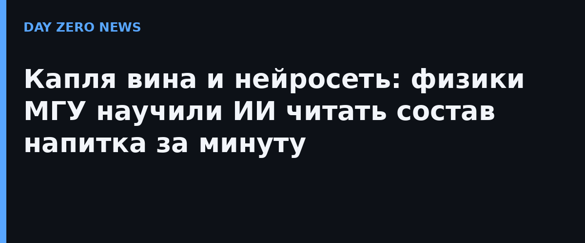

На фестивале «Наука 0+» в Москве руководитель лаборатории адаптивных методов обработки данных НИИЯФ МГУ Сергей Доленко рассказал ТАСС о системе, которая по одной капле вина распознаёт его химический состав. Никакой пробоподготовки, реактивов и долгих лабораторных процедур — достаточно менее 50 микролитров жидкости и инфракрасного спектра.
Физики снимали ИК-спектры в среднем диапазоне: именно там видны колебательные полосы молекул, по которым можно проводить качественный и количественный анализ в сложных средах. Нейросеть обучали на 1734 образцах — модельных растворах, имитирующих белые и красные вина, а затем проверяли на реальных продуктах. В ход пошли три подхода: PLS-регрессия, перцептроны и свёрточные сети — именно свёрточные дали заметно лучшее качество по этанолу и сахарам.
Точность определения: этанол — 0,36%, сахара — 8 г/л, кислоты — 2 г/л, глицерин — 3,4 г/л, диоксид серы — на уровне ПДК. Измерение занимает меньше минуты, а при готовой базе данных итоговый результат известен менее чем за минуту после регистрации спектра. Авторы подчёркивают: подход сопоставим с зарубежными коммерческими методами, доступ к которым сейчас не всегда возможен, и заметно удешевляет софт для приборов экспресс-анализа.
Статья «A novel method of using neural networks to predict wine composition» опубликована в Scientific Reports (Nature) — цифры по 1734 спектрам и точностям совпадают с рассказом авторов ТАСС. Отдельного пресс-релиза компании тут нет: это университетская работа, её официальный первичный документ — сама публикация. В перспективе метод хотят адаптировать для соков и газированных напитков.